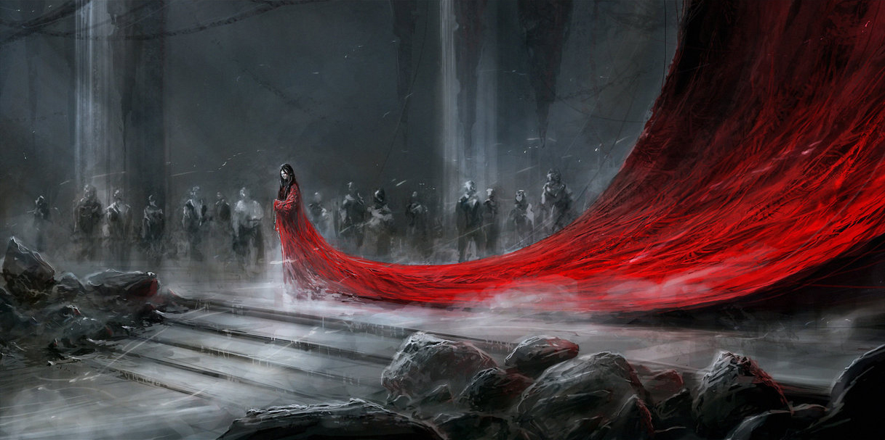
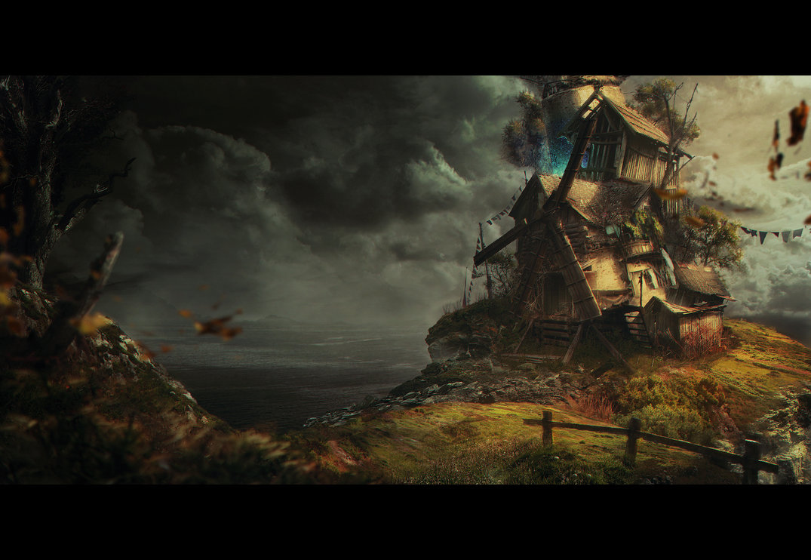

Ein ruhiger Einstieg mit klarer Fläche.
Farbe, Tiefe und Kontrast für den aktiven Zustand.

Das Panel wächst weich und bleibt lesbar.
Hover und Fokus zeigen dieselbe visuelle Logik.
Auch mobil bleibt jedes Panel erreichbar.